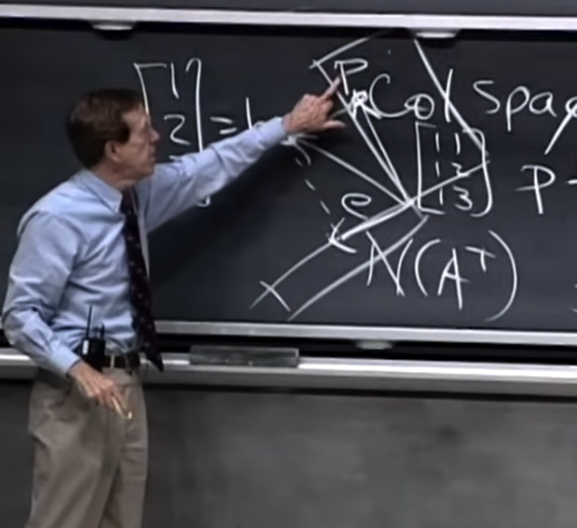
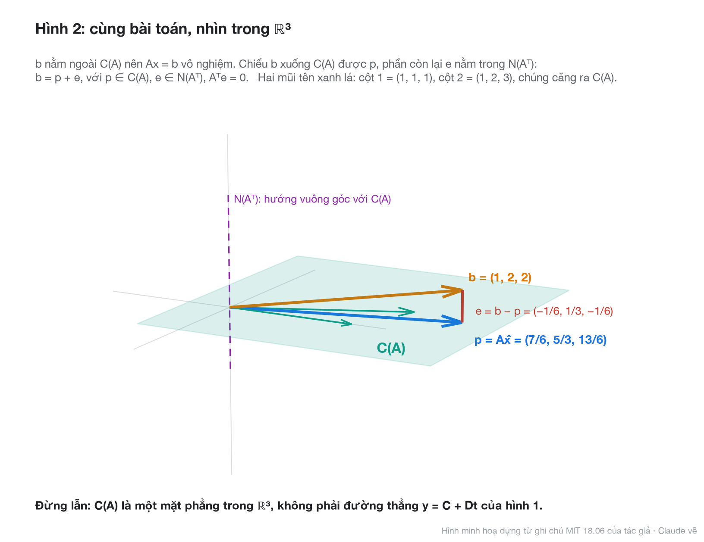

Bình phương tối thiểu
Ba điểm không thẳng hàng thì không có đường thẳng nào đi qua cả ba. Bài này tìm đường thẳng gần nhất, và cho thấy nó chính là một phép chiếu.
- Cần biết trước
- Phép chiếu · Ma trận nghịch đảo
- Mở ra
- Giả nghịch đảo · Hồi quy tuyến tính đơn (Casella 11.3) · Khớp đa thức (Bishop 1.1) · QR, SVD cho bình phương tối thiểu (Nocedal 10.2)
- Học từ
- MIT 18.06, bài giảng 16 (Gilbert Strang)
1Bài toán: ba điểm không cùng nằm trên một đường
Có ba điểm \((1, 1)\), \((2, 2)\), \((3, 2)\). Ta muốn một đường thẳng \(y = C + Dt\) đi qua cả ba. Thay từng điểm vào được ba phương trình, hai ẩn:
Ma trận \(A\) "cao ốm": ba hàng, hai cột. Column space của nó chỉ là một mặt phẳng trong \(\mathbb{R}^3\), không phủ hết \(\mathbb{R}^3\). Và \(b\) lại không nằm trong mặt phẳng đó, nên hệ vô nghiệm: không có \(C, D\) nào làm đường thẳng đi qua cả ba điểm.
Nhưng ta sẽ cố gắng làm tốt nhất có thể, bằng cách project b lên colums space của A, mang ý nghĩa là tìm điểm p nằm trong C(A) sao cho nó gần nhất với b.
Để rồi ta tìm solution của bài toán Ax̂ = p (vốn lúc này đã có thể solvable do p đã nằm trong C(A)) thì solution đó là một solution của bài toán gần nhất với bài toán đầu không thể giải.
2Hai bức tranh của cùng một bài toán
Strang nhấn mạnh: phải nhớ là ta có hai bức tranh. Bức tranh thứ nhất nằm trong mặt phẳng \((t, y)\), nơi ta nhìn thấy đường thẳng và các sai số. Gọi \(p_1, p_2, p_3\) là ba điểm trên đường thẳng ứng với \(t = 1, 2, 3\); khoảng cách từ \(p_i\) đến \(b_i\) là sai số \(e_i\). Error của cả bài là \(e_1^2 + e_2^2 + e_3^2\), và ta chọn đường thẳng làm tổng đó nhỏ nhất.

Bức tranh thứ hai nằm trong \(\mathbb{R}^3\), nơi mỗi vector có ba thành phần (một thành phần cho mỗi điểm). Ở đây \(b = (1, 2, 2)\) nằm ngoài mặt phẳng \(C(A)\), mặt phẳng căng bởi hai cột \((1, 1, 1)\) và \((1, 2, 3)\). Vector \(p = (p_1, p_2, p_3)\) nằm trong mặt phẳng, và là vector gần \(b\) nhất trong đó.


Bấm vào ảnh để xem to.
CHÚ Ý: ĐỪNG LÚ LẪN NHÉ, ĐƯỜNG THẰNG Y = C + Dt KHÔNG LIÊN QUAN GÌ ĐẾN COLS SPACE CỦA A, NÓ LÀ MỘT 2D PLANE TRONG R3)
Ý câu cuối: column space mới là mặt phẳng 2 chiều trong \(\mathbb{R}^3\), còn đường thẳng sống ở bức tranh 1. \(C\) và \(D\) cũng không hiện ra trong bức tranh vector: chúng là hệ số để kết hợp hai cột của \(A\) thành \(p\).
3Phương trình chuẩn
Vì \(p\) là hình chiếu của \(b\) lên \(C(A)\), nên \(p\) là tổ hợp tuyến tính của các cột của \(A\): \(p = A\hat{x}\). Phần còn lại \(e = b - p\) vuông góc với \(C(A)\), tức vuông góc với mọi cột của \(A\), nên \(e\) thuộc left nullspace \(N(A^T)\):
Đây là normal equation, mà Strang gọi có lẽ là phương trình quan trọng nhất của thống kê. Với ba điểm của ta:
Đường thẳng tốt nhất là \(y = \tfrac{2}{3} + \tfrac{1}{2}t\). Thay lại được
Cùng kết quả, đi đường giải tích
Gọi error là \(f(C, D) = (C + D - 1)^2 + (C + 2D - 2)^2 + (C + 3D - 2)^2\). Cho đạo hàm theo từng biến bằng 0:
\(\dfrac{\partial f}{\partial C} = 6C + 12D - 10 = 0 \Leftrightarrow 3C + 6D = 5\), và tương tự \(\dfrac{\partial f}{\partial D} = 0 \Leftrightarrow 6C + 14D = 11\).
Đúng hai phương trình ở trên. Nghĩa là: C, D làm tổng bình phương sai số nhỏ nhất cũng chính là C, D kết hợp các cột của A để ra p, hình chiếu của \(b\) lên \(C(A)\).
4Kiểm tra lại kết quả
Nhìn vào \(p\) và \(e\) vừa tính:
Điều này là đương nhiên: \(e\) vuông góc với cả mặt phẳng \(C(A)\), mà \(p\) nằm trong mặt phẳng đó.
5Ma trận chiếu và phần bù của nó
Ma trận chiếu lên \(C(A)\) là \(P = A(A^TA)^{-1}A^T\). Thử hai trường hợp cực đoan:
- b đã nằm trong C(A). Viết \(b = Ax\), thì \(Pb = A(A^TA)^{-1}(A^TA)x = Ax = b\). Chiếu một vector đã nằm sẵn trong mặt phẳng thì nó đứng yên.
- b vuông góc với C(A). Khi đó \(b \in N(A^T)\), nên \(A^Tb = 0\) và \(Pb = A(A^TA)^{-1}\cdot 0 = 0\).
Vì \(C(A)\) và \(N(A^T)\) vuông góc và số chiều cộng lại bằng \(m\), mọi \(b\) tách được thành hai phần: \(b = p + e\). Từ đó \(e = b - Pb = (I - P)b\): \(I - P\) cũng là một ma trận chiếu, chiếu lên không gian vuông góc với \(C(A)\). Nó cũng thoả hai tính chất của ma trận chiếu: \((I - P)^T = I - P\) và \((I - P)^2 = I - P\).
6Khi nào AᵀA khả nghịch?
Cả bài dựa vào việc giải được \(A^TA\hat{x} = A^Tb\), tức \(A^TA\) phải khả nghịch. Mệnh đề: nếu các cột của A độc lập tuyến tính thì AᵀA khả nghịch.
Chứng minh. Giả sử \(A^TAx = 0\); cần chỉ ra \(x = 0\). Nhân \(x^T\) vào hai vế:
Tổng bình phương các thành phần của \(Ax\) chỉ bằng 0 khi \(Ax\) là vector 0. Mà các cột của \(A\) độc lập, nên \(Ax = 0\) chỉ xảy ra khi \(x = 0\). Vậy nullspace của \(A^TA\) chỉ có vector 0; \(A^TA\) vuông nên nó full rank, tức khả nghịch.
Trong thống kê
Đây là bài toán hồi quy tuyến tính. Người làm thống kê rất để ý outlier: chỉ một điểm lệch xa cũng kéo đường thẳng đi đáng kể, vì sai số bị bình phương. Thử ở hình tương tác: kéo một chấm cam ra thật xa và xem đường thẳng bị lôi theo. Bài này giả sử không có outlier.